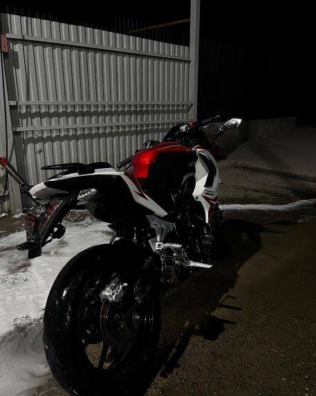

Первый свой двухколесый я купил когда мне было 14 лет. Это был так называемый "унитаз" или "табуретка" на колесах. Он был достаточно для меня на тот момент мощным. С помощью него я вник в этот мир "хрустиков". После того как обкатал один сезон, мощности моего скутера для меня уже было мало. Я начал рассматривать мопеды на мотоциклетной основе. Разглядывая объявления , я сразу приметил мопед - чоппер. Чоппер - это мотоциклы с удлиненным рулем и заниженной посадкой. Купив его я заметил несколько странных особенностей этого аппарата. Он был на АКПП , что странно для мопедов и мотоциклов. Имел "под сиденьем" 125 куб. см. Но из - за несовместимости мотоциклетной основы и АКПП, я избавился от него через месяц. Было слишком много поломок из - за не подходящего мотора на такую раму. Затем я приобрел себе уже полноценный мотоцкил , двигателем 200 куб. см. Мне на тот момент было 15 полных лет. Вот именно с этим мотоциклом я развивался в теме тюнинга. Я экспериментировал на нем, доплнял различными датчиками приборную панель, менял стоковый выхлоп на прямоток, удленил маятник , сменил фару и поставил дополнительные диодные ФСО, даже до колес добрался. Во всем этом мне помогал мой отец. Мы обожали разбирать его и собирать. У этого есть свой кайф. На нем я научился делать "бернаут" и "вилли". Проездил я почти 2 сезона. В 2022 я решил попробовать что - нибудь новое и продав свою "двухсоткку", я приобрел спортивный мотоцикл Racer Storm, на котором езжу по сей день. Брал я его уже б/у и цена была очень даже хорошей относительно новых. Сказать про него могу немного , так как откатал я на нем довольно мало. Могу только подчеркнуть его резвость и очень даже приличную для такого двигателя скорость. Вот фотография моего последнего "коня".
